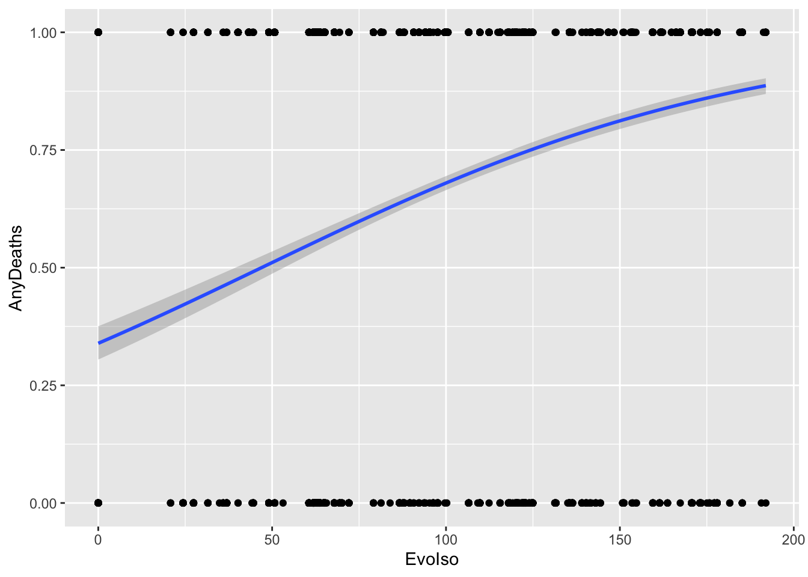
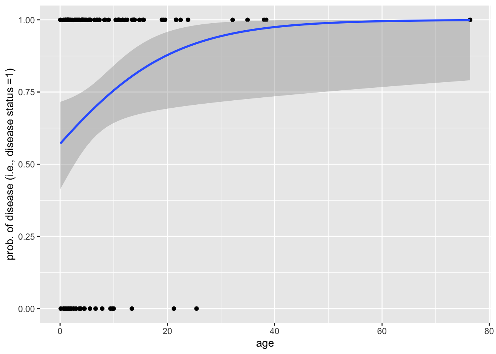

library(tidyverse)
library(broom)
library(lme4)11 Linear models II
11.1 Lesson preamble
11.1.1 Learning objectives
- Learn how dependent data can be modeled, and the sitations in which one may encounter such data.
- Understand the structure, assumptions, and implementation of GLMs.
- Understand the structure, assumptions, and implementation of LLMs.
- Learn how to use simulation to inform what data that should be collected, and how.
11.1.2 Lesson outline
- Generalized linear models
- Structure and assumptions, including interpretation of the effects
- Implement logistic regression using dataset of Farrell and Davies (2019)
- Other types of GLMs (Poisson, negative binomial, etc.)
- Power analysis!
- Dealing with dependent data
- Splitting the data into groups…
- Controlling for phylogeny
- Linear mixed models: structure and assumptions
- Difference between fixed, random effects; examples
- Implement mixed models using sexual size dimorphism data
11.2 Generalized linear models: theory and examples
So far we have seen how linear models can be used to describe relationships between a response variable and predictors when the data is normally distributed or can be transformed so that this assumption is not violated. What if we were, say, interested in a binary response (e.g., infection status of a host with a particular parasite) and how it changes with a continuous predictor (e.g., age of the host)? In this case, one can use a special kind of linear model called logistic regression to estimate the additive effect of predictor(s) on the binary response. Logistic regression is a special kind of generalized linear model.
11.2.1 GLMs: structure and assumptions
Generalized linear models describe how the mean of a response variable changes as a function of the predictors when important assumptions of the linear modeling framework (normality, constant error variance, etc.) are violated. In particular, GLMs allow us to work with data that are not normal, whose range is restricted, or whose variance depends on the mean. The latter might be important if, say, larger values of the response were also more variable.
A GLM models the transformed mean of a response variable \(Y_i\) as a linear combination of the predictors \(x_1,\dots,x_p\). The goal of using a GLM is often to estimate how the predictors (e.g., sex and previous exposure to the disease) affect the response (e.g., infection status). sThe transformation of the response is done using a “link” function \(g(\cdot)\) that is specific to the distribution which used to model the data. Written out, a GLM is of the form
\[g(\mu_i) = \beta_0 + \beta_1 x_{1i} + \cdots \beta_p x_{pi}.\]
The link functions for the Normal, Gamma, Exponential, Poisson, and Multinomial distributions are known. In general, GLMs apply when the data are modeled using a member of the exponential family. The distributions will have a mean parameter \(\mu\) and, sometimes, a parameter \(\tau\) which characterizes the dispersion around the mean. GLMs are fitted using by maximizing the likelihood function that results from assuming the data arise from a distribution in the exponential family (with a mean and dispersion that depend on the predictors), using using numerical optimization methods.
11.2.2 Interpretation of the effects
Notice that, in a GLM, because the mean of the response been transformed in a particular way, the coefficients must be interpreted carefully. In particular, \(\beta_{j}\) is how a per-unit change in \(x_{j}\) increases or decreases the transformed mean \(g(\mu_i)\).
11.2.3 Example: logistic regression
In a previous class, we estimated the probability of death given infection for the wild boar when infected with viruses in the family Coronaviridae. In your current homework, you have been tasked with extending that model to all host and parasite family combinations. Excitingly, the dataset which have used includes information about the mean evolutionary isolation of all hosts that are infected with a parasite from all other hosts which are known to be infected.
Farrell and Davies tested if the mean evolutionary isolation affected the probability of death. They used a complex model to control for sampling bias and other confounding aspects of the data. We will ignore those complexities and see if, using a GLM, we can recapitulate their findings. To get started, load the disease_distance.csv dataset.
disease_distance <- read_csv("data/disease_distance.csv")Rows: 4157 Columns: 24
── Column specification ────────────────────────────────────────────────────────
Delimiter: ","
chr (7): Country, Disease, Parasite, Host, HostOrder, ParaType, ParaFamily
dbl (17): Year, Cases, Deaths, Destroyed, Slaughtered, SR, EvoIso, Taxonomic...
ℹ Use `spec()` to retrieve the full column specification for this data.
ℹ Specify the column types or set `show_col_types = FALSE` to quiet this message.disease_distance %>%
mutate(AnyDeaths = case_when(Deaths > 0 ~ 1,
Deaths == 0 ~ 0)) -> DataBern
DataBern |>
ggplot(aes(x = EvoIso, y = AnyDeaths)) +
geom_point()These are binary data. We CANNOT use a linear model, as this assumes the data are Normal. In fact, these data are distributed according to a Bernoulli(\(p\)) distribution. This is a member of the exponential family and the type of generalized linear model when the data are distributed in this way (i.e., are binary) is called logistic regression.
The mean of Bernoulli(\(p\)) data is just \(p\), and the link function for \(p\) is
\[ \text{logit}(p) = \log\frac{p}{1-p}.\]
\(\text{logit}(p)\) is called the log-odds, which can be thought of as a likelihood the response takes on the value one. In logistic regression, the log-odds ratio is modeled as a linear combination in the predictors:
\[ \text{logit}(p_i) = \beta_0 + \beta_1 x_{1i} + \cdots + \beta_p x_{pi}.\]
Notice that increasing \(x_j\) by one unit results in change \(\beta_j\) to the link-transformed response.This is how the effect sizes are interpreted for GLMs such as this one.
model <- glm(AnyDeaths ~ EvoIso,
family = "binomial",
data = DataBern)
summary(model)
Call:
glm(formula = AnyDeaths ~ EvoIso, family = "binomial", data = DataBern)
Deviance Residuals:
Min 1Q Median 3Q Max
-2.0874 -1.2607 0.6072 0.8802 1.4703
Coefficients:
Estimate Std. Error z value Pr(>|z|)
(Intercept) -0.6665277 0.0805302 -8.277 <2e-16 ***
EvoIso 0.0141947 0.0007802 18.193 <2e-16 ***
---
Signif. codes: 0 '***' 0.001 '**' 0.01 '*' 0.05 '.' 0.1 ' ' 1
(Dispersion parameter for binomial family taken to be 1)
Null deviance: 5257.1 on 4156 degrees of freedom
Residual deviance: 4890.5 on 4155 degrees of freedom
AIC: 4894.5
Number of Fisher Scoring iterations: 411.2.3.1 Challenge
How do we interpret the regression coefficient above?
11.2.3.2 Challenge
What are the log-odds of death if the evolutionary isolation of hosts is \(EI = 200\)? How much does this quantity change if the evolutionary isolation were to increase by 20 million years?
11.2.3.3 Visualizing the fitted model
DataBern |>
ggplot(aes(x = EvoIso, y = AnyDeaths)) +
geom_point() +
geom_smooth(method = "glm",
method.args = list(family = "binomial")
)`geom_smooth()` using formula = 'y ~ x'
### base R implementation
EvoIso <- seq(0, 200, 0.1)
predicted_prob <- predict(model, list(EvoIso = EvoIso), type = "response")
plot(DataBern$EvoIso, DataBern$AnyDeaths)
lines(EvoIso, predicted_prob)11.2.4 Other GLMs
Here are some common types of response variables and their corresponding distributions:
- Count data: the Poisson distribution
- Over-dispersed count data (when the count data is more spread out than “expected”): the negative binomial distribution
- Binary data (two discrete categories): the binomial distribution
- Counts of occurrences of \(K\) different types: the multinomial distribution
- Times between \(r\) events: the gamma distribution, which is equivilent to the exponential when \(r=1\)
You will have the opportunity to implement such models in your homework and on the challenge assignment!
11.3 Power analysis
When designing experiments or how best to collect data, it is best to think about the model you will fit and the kind of experiment you need to design in order to have sufficient power to detect an effect of interest. For example, if we thought that age affected the likelihood that a host dies of a disease, then we would likely fit a logistic regression-type model. By simulating data from such a model, we can determine
- the minimum sample size required to reliably estimate an effect of a certain size
- the minimum sample size required to detect an effect of a certain size at a fixed significance level
- the minimum effect size that can be detected at a fixed significance level and sample size
11.3.1 Example
Below is an example of a simulation in which binary disease data (death/no death; 0/1) are simulated hosts of various ages, assuming the the log-odds of disease is a linear function of age. (Notice that we assume that host lifetimes are exponentially distributed with rate parameter \(\lambda = 1/10\) years. This means that hosts, in this simulation, live for an average of 10 years.) We then fit a logistic regression to this data to determine the effect of age on disease risk.
data_generator <- function(sample_size = 100, effect = 0.1){
age <- rexp(n = sample_size, rate = 1/10)
linear_predictor <- effect*age
prob <- 1/(1+exp(-linear_predictor))
disease_status <- c()
for (i in 1:length(prob)){
disease_status[i] <- rbinom(n = 1, size = 1, prob = prob[i])
}
return(data.frame(age = age, disease_status = disease_status))
}
data <- data_generator()
data %>% pivot_longer(! age) %>%
ggplot(aes(x = age, y = value)) + geom_point() +
geom_smooth(method = "glm", method.args = list(family = "binomial")
) + labs(y = "prob. of disease (i.e., disease status =1)")`geom_smooth()` using formula = 'y ~ x'
model <- glm(disease_status~scale(age), family = binomial, data = data)
summary(model)
Call:
glm(formula = disease_status ~ scale(age), family = binomial,
data = data)
Deviance Residuals:
Min 1Q Median 3Q Max
-2.4110 -1.1263 0.5835 0.9698 1.2809
Coefficients:
Estimate Std. Error z value Pr(>|z|)
(Intercept) 0.8775 0.2583 3.397 0.000682 ***
scale(age) 1.1319 0.3683 3.073 0.002118 **
---
Signif. codes: 0 '***' 0.001 '**' 0.01 '*' 0.05 '.' 0.1 ' ' 1
(Dispersion parameter for binomial family taken to be 1)
Null deviance: 128.21 on 99 degrees of freedom
Residual deviance: 113.96 on 98 degrees of freedom
AIC: 117.96
Number of Fisher Scoring iterations: 5Next, we will write a function that performs a power analysis. We will use this function determine the sample size that is required so that simulating the age-disease data repeatedly we identify a significant effect of age on disease status (i.e., reject the null hypothesis) at level \(\alpha = 0.01\) at least \(95\%\) of the time.
power_analysis_function <- function(sample_size){
sims <- 1000
pvalues <- c()
for (i in 1:sims){
data <- data_generator(sample_size)
model <- glm(disease_status~scale(age), family = binomial, data = data)
pvalues[i] <- summary(model)$coefficients[2,4]
}
power_estimate <- length(which(pvalues < 0.01))/length(pvalues)
return(power_estimate)
}
sample_sizes <- seq(150,200,10); power_estimates <- c()
for (i in 1:length(sample_sizes)){
power_estimates[i] <- power_analysis_function(sample_size = sample_sizes[i])
}
knitr::kable(cbind(n = sample_sizes, power = power_estimates))| n | power |
|---|---|
| 150 | 0.880 |
| 160 | 0.914 |
| 170 | 0.940 |
| 180 | 0.948 |
| 190 | 0.963 |
| 200 | 0.977 |
11.4 Dealing with dependent data!
To illustrate how mixed models work and what kinds of questions we can answer using them, we will use the sexual size dimorphism data which we analyzed last class. Recall that we did NOT find a significant effect of sex on the average body size. There was no effect of the interaction between Order and sex on body size. Indeed, this matches what you saw in the homework questions where you had to visualize the data — most of the variation in body size was between orders.
In the models we built, we ignored a pretty important fact about the data: species have a common history (i.e., phylogeny). Thus, observations are not independent! This can make drawing inferences from comparative data difficult. We will address how to deal with the non-independence of data (due to a common history of species, replication in blocks, etc.) using three approaches.
But, first, let’s download the data we will use in this section!
SSDdata <- read_csv("data/SSDinMammals.csv")Rows: 691 Columns: 18
── Column specification ────────────────────────────────────────────────────────
Delimiter: ","
chr (6): Order, Family, Species, Scientific_Name, Comments, Source
dbl (12): massM, SDmassM, massF, SDmassF, lengthM, SDlengthM, lengthF, SDlen...
ℹ Use `spec()` to retrieve the full column specification for this data.
ℹ Specify the column types or set `show_col_types = FALSE` to quiet this message.mammal_length <- SSDdata %>%
select(c("Order", "Scientific_Name", "lengthM", "lengthF")) %>%
pivot_longer(c(lengthM, lengthF), names_to = "sex", values_to = "length",
names_pattern = "length(.)")
mammal_mass <- SSDdata %>%
select(c("Order", "Scientific_Name", "massM", "massF")) %>%
pivot_longer(c(massM, massF), names_to = "sex", values_to = "mass",
names_pattern = "mass(.)")
mass_nodup <- mammal_mass %>%
group_by(Scientific_Name, sex) %>%
distinct(Scientific_Name, sex, .keep_all = TRUE)
length_nodup <- mammal_length %>%
group_by(Scientific_Name, sex) %>%
distinct(Scientific_Name, sex, .keep_all = TRUE)
mammal_long <- full_join(mass_nodup, length_nodup,
by = join_by("Scientific_Name", "sex", "Order")) |>
drop_na()
glimpse(mammal_long)Rows: 528
Columns: 5
Groups: Scientific_Name, sex [528]
$ Order <chr> "Artiodactyla", "Artiodactyla", "Artiodactyla", "Artio…
$ Scientific_Name <chr> "Aepyceros melampus", "Aepyceros melampus", "Gazella r…
$ sex <chr> "M", "F", "M", "F", "M", "F", "M", "F", "M", "F", "M",…
$ mass <dbl> 44180.00, 40480.00, 30700.00, 28100.00, 70280.00, 5206…
$ length <dbl> 93.400, 100.000, 89.200, 92.300, 159.450, 149.190, 181…11.4.1 Group-by-group analyses
One first way we can handle dependent data is to split observations into groups such that, within each group, observations are independent (or approximately so). This is what we did last class when we fit order-specific regression coefficients of sex on body size. We saw that ALL order-specific effects had confidence intervals which overlapped zero!
# run linear model of size on sex for EACH Order
Order_specific_models <-
mammal_long |>
group_by(Order) |>
do(model = tidy(lm(log(mass) ~ sex, data = .), conf.int = T))Warning in qt(a, object$df.residual): NaNs produced
Warning in qt(a, object$df.residual): NaNs produced
Warning in qt(a, object$df.residual): NaNs produced# get coefficients for each Order
Order_specific_models |>
unnest()Warning: `cols` is now required when using `unnest()`.
ℹ Please use `cols = c(model)`.# A tibble: 30 × 8
Order term estimate std.error statistic p.value conf.low conf.high
<chr> <chr> <dbl> <dbl> <dbl> <dbl> <dbl> <dbl>
1 Artiodactyla (Int… 11.5 0.965 11.9 3.06e- 7 9.37 13.7
2 Artiodactyla sexM 0.0327 1.37 0.0239 9.81e- 1 -3.01 3.07
3 Carnivora (Int… 7.68 0.428 17.9 1.27e-14 6.79 8.57
4 Carnivora sexM 0.320 0.606 0.529 6.02e- 1 -0.936 1.58
5 Chiroptera (Int… 2.76 0.0993 27.8 1.07e-72 2.57 2.96
6 Chiroptera sexM -0.0484 0.140 -0.345 7.30e- 1 -0.325 0.228
7 Cingulata (Int… 10.4 NaN NaN NaN NaN NaN
8 Cingulata sexM 0.0908 NaN NaN NaN NaN NaN
9 Dasyuromorp… (Int… 7.44 NaN NaN NaN NaN NaN
10 Dasyuromorp… sexM 0.499 NaN NaN NaN NaN NaN
# ℹ 20 more rows# visualize effects, CIs, and p values
Order_specific_models |>
unnest() |>
subset(term == "sexM") |>
group_by(Order) |>
ggplot(aes(y = Order, x = estimate,
xmin = conf.low,
xmax = conf.high
)
) +
geom_pointrange() +
geom_vline(xintercept = 0, lty = 2)Warning: `cols` is now required when using `unnest()`.
ℹ Please use `cols = c(model)`.Warning: Removed 3 rows containing missing values or values outside the scale range
(`geom_segment()`).No effect of sex on body size, for any of the orders!
11.4.1.1 Challenge
How would you adjust the previous plot to show the estimated intercepts AND the effects of sex?
Order_specific_models |>
unnest() |>
# subset(term == "sexM") |>
group_by(Order) |>
ggplot(aes(y = Order, x = estimate,
xmin = conf.low,
xmax = conf.high,
color = term
)
) +
geom_pointrange() +
geom_vline(xintercept = 0, lty = 2)Warning: `cols` is now required when using `unnest()`.
ℹ Please use `cols = c(model)`.Warning: Removed 6 rows containing missing values or values outside the scale range
(`geom_segment()`).11.4.1.2 Challenge
How would you retrieve model fits for each Order in base R?
11.4.1.3 Challenge
Adjust the plot above so that it the size of the estimates depend on the number of observations in an Order? Hint: determine the number of observations per Order and then use the merge() function with the Order_specific_models tibble. To adjust the range of point sizes, use scale_size().
11.4.1.4 Pros and cons
There are several advantages to preforming a group-by-group analysis:
- Fitting more complex models (e.g., those with random effects) can be difficult. There may be convergence issues, and interpretation of effects and \(p\)-values can be tricky.
- The group-by-group analysis is robust in the face of unbalanced data (i.e., when there are more observations for some groups than others).
- The conclusions from a group-by-group analysis are conservative.
- The group-by-group analysis is fairly easy to implement.
Among the disparages to this approach are the following:
- With fewer samples per group, the analysis may be under-powered.
- Splitting the data into groups means there are more coefficients to estimate, and thus confidence intervals to be estimated and hypothesis tests to be performed. This means there is a greater chance that we obtain a spurious association.*
- It is difficult to draw conclusions about the variance between groups. In some applications, this is of interest. In others, it is not.
*One solution is to adjust the significant level based on the number of tests conducted. If \(k\) hypotheses are tested, an common adjustment is to set \(\alpha = 0.05/k\).
11.4.2 Controlling for phylogeny
A common reason data are dependent in biology is that species share a common history of descent with modification. When we assume that the observations are independent, we make implicit assumptions about the degree to which the characters at the tips of a phylogeny have underwent independent evolution. Sometimes, when species are diverged by many millions of years and traits evolve quickly, it is reasonable to ignore the phylogenetic constraints on the data. In other cases, it is essential to consider the role of phylogeny.
Several methods can control for phylogeny (if known). In fact, such methods can use information in the branching pattern of species to draw inferences about the evolution of ecologically-important traits (such as body and brain size, dispersal rate, etc.). We will not discuss how to implement phylogenetic comparative methods, but it is good to know they exist and how, at a surface level, they work.
Intuition for how PCMs work is easiest to grasp when we consider a tree with \(n\) species at the tips. If we know the pairwise divergence times for all species, then we can transform the data so that observations are independent by looking at all differences of traits. Not all differences are equally informative; if species have diverged a long time ago, there has been more time for differences to build up. PCMs account for this by specifying how the distribution of trait differences between species \(i\) and \(j\) depends on the time that has elapsed since these species diverged, In particular, the larger the divergence time, the greater the variance in \(Y_i-Y_j\), the difference in trait values between species \(i\) and \(j\). A simple way to do this is to write \(\sigma_{ij} = \sigma^2/T_{ij}\).1
11.4.3 Random effects!
Another way one can account for dependent data is by including random effects. Random effects are often used to control for the fact that observations are clustered (e.g., trait data for species belonging to a higher taxonomic unit, measurements of plant biomass from plots of land).
11.4.3.1 Structure and assumptions
A common way models with random effects are formulated is as follows:
\[Y_{ij} \sim \text{Normal}(\beta_0 + \beta_1 x_{1ij} + \cdots + \beta_{p} x_{pij} + b_{0i} + b_{1i} z_{1ij} + \cdots + b_{qi} z_{qij}, \sigma_{ij}^2),\]
where \(ij\) is the \(i\)th observation from the \(j\)th cluster and
\[b_{ki} \sim \text{Normal}(0,\tau_k^2).\]
This gives rise to a distribution for \(Y\) which depends on the values of the random effects \(b_0,\dots,b_q\). Under the hood, methods that fit models of this form numerically maximize a version of the likelihood function that results from these assumptions.
11.4.3.2 Challenge
In each of the following examples, which effects might be reasonably treated as fixed vs. random? Justify your answer.
Suppose we are working with rodents that have been infected with an evolved strain of the parasite that causes malaria. Some rodents have been treated with a prospective vaccine and others sham-vaccinated. We are interested if a proxy for virulence (e.g., density of infected red blood cells) depends on vaccination status.
Suppose we conduct the same experiment, except rodents are caged are sets of four.
Suppose we measure the time between sightings of raccoon in a Toronto neighborhood using six camera traps (strategically placed in the neighborhood). We do this for year, and want to ask if mean daily temperature predicts the frequency of raccoon occurrence.
Suppose that, every year, we go to the Amazon and measure the number of bird calls that come from \(n=30\) trees. Assume that the trees are far enough apart we can treat them as independent. We measure the number of birds in a tree, characteristics of the tree (cover, height, width, age), the year in which a measurement was done, and the mean temperature that year. We want to know if tree cover affects the frequency of bird calls, and if it interacts with temperature.
For more on the difference between fixed and random effects, check out the following resources
11.4.3.3 Using lme4 to fit random and mixed effect models
We will start by fitting a model of log body size on log length where the intercept is random depending on the Order. Based on a quick visualization of the data, such a model may be appropriate.
ggplot(data = mammal_long, aes(y = log(mass),
x = log(length)
)
) +
geom_point(aes(color = Order), size = 3) -> p
p To fit regress the response on a set of fixed effects with random intercepts that depends the values assumed by a random effect x, we call lmer and write a linear model with (1|x).
## random intercept for Order
model <- lmer(formula = log(mass) ~ log(length) + (1|Order), data = mammal_long)
summary(model)Linear mixed model fit by REML ['lmerMod']
Formula: log(mass) ~ log(length) + (1 | Order)
Data: mammal_long
REML criterion at convergence: 1473
Scaled residuals:
Min 1Q Median 3Q Max
-3.4725 -0.6209 -0.0859 0.5464 4.5351
Random effects:
Groups Name Variance Std.Dev.
Order (Intercept) 4.256 2.0630
Residual 0.847 0.9203
Number of obs: 528, groups: Order, 15
Fixed effects:
Estimate Std. Error t value
(Intercept) 2.72062 0.59488 4.573
log(length) 1.12363 0.07116 15.789
Correlation of Fixed Effects:
(Intr)
log(length) -0.412fixef(model)(Intercept) log(length)
2.720625 1.123628 ranef(model)$Order
(Intercept)
Artiodactyla 2.9590568
Carnivora -0.4243736
Chiroptera -1.7590786
Cingulata 1.9715210
Dasyuromorphia 2.1671133
Didelphimorphia -1.4045738
Diprotodontia 1.2066571
Eulipotyphla -2.4045055
Lagomorpha 2.1519392
Macroscelidea -4.0757058
Peramelemorphia 1.5377333
Pilosa -0.1832817
Primates 0.8008374
Rodentia -1.5015008
Scandentia -1.0418383
with conditional variances for "Order" From top to bottom, the output is telling us that the model was fit using a method called REML (restricted maximum likelihood). It returns information about the residuals, random effects, and fixed effects. The output also tells us about the estimated variance for the random effects in the model. Here, the variance associated with Order is 4.256. The variance explained by Order is 4.256/(4.256+0.847) after controlling for the fixed effects. Note the denominator here is the total variance, including from the residuals. As usual, we also have information about the fixed effects.
To visualize the model, we can predict the overall and Order-specific relationship of log mass on log length for all of the Orders represented in the data.
mammal_long |> ungroup() |> select(mass, length, Order) |>
mutate(fit.m = predict(model, re.form = NA), # does not include random effects
fit.c = predict(model, re.form = NULL) # includes random effects
) ->
predicted_values
predicted_values |>
ggplot(aes(x = log(length), y = log(mass), color = Order)) +
geom_point(size = 3) +
geom_line(inherit.aes = F, aes(x = log(length), y = fit.c, color = Order), size = 1) +
geom_line(inherit.aes = F, aes(x = log(length), y = fit.m), color = "black", size = 2)Warning: Using `size` aesthetic for lines was deprecated in ggplot2 3.4.0.
ℹ Please use `linewidth` instead.The thick black line corresponds to the fitted values associated with the fixed-effect component of the model. The colored lines correspond to the fitted values estimated for each Order.
Perhaps a model with Order-specific random intercepts AND slopes would be better. We fit this model using the code below. The key difference in syntax is that we write (1+fixed effect|random effect) to indicate that the random effect has an effect on both the intercept and slope of the response on the fixed effect.
## random intercept and slope for Order
model2 <- lmer(formula = log(mass) ~ log(length) + (1+log(length)|Order), data = mammal_long)
summary(model2)Linear mixed model fit by REML ['lmerMod']
Formula: log(mass) ~ log(length) + (1 + log(length) | Order)
Data: mammal_long
REML criterion at convergence: 1362.7
Scaled residuals:
Min 1Q Median 3Q Max
-4.8608 -0.5198 -0.0610 0.4402 5.7352
Random effects:
Groups Name Variance Std.Dev. Corr
Order (Intercept) 19.7590 4.4451
log(length) 1.3434 1.1591 -0.96
Residual 0.6581 0.8112
Number of obs: 528, groups: Order, 15
Fixed effects:
Estimate Std. Error t value
(Intercept) 3.6222 1.2800 2.830
log(length) 0.9398 0.3392 2.771
Correlation of Fixed Effects:
(Intr)
log(length) -0.954fixef(model2)(Intercept) log(length)
3.6222206 0.9397814 ranef(model2)$Order
(Intercept) log(length)
Artiodactyla -5.086433 1.5697087
Carnivora 3.517003 -0.7993673
Chiroptera -3.227380 0.5425373
Cingulata -2.437867 0.9014589
Dasyuromorphia 3.494122 -0.7550221
Didelphimorphia -2.096031 0.1145380
Diprotodontia 3.737120 -0.7974711
Eulipotyphla -6.677306 1.7068614
Lagomorpha 3.168664 -0.5891273
Macroscelidea 4.576435 -1.8088720
Peramelemorphia 2.085998 -0.4541549
Pilosa 4.823089 -0.9632143
Primates 1.578103 -0.2317300
Rodentia -4.478792 0.9991504
Scandentia -2.976726 0.5647040
with conditional variances for "Order" mammal_long |> ungroup() |> select(mass, length, Order) |>
mutate(fit.m = predict(model2, re.form = NA),
fit.c = predict(model2, re.form = NULL)
) ->
predicted_values
predicted_values |>
ggplot(aes(x = log(length), y = log(mass), color = Order)) +
geom_point(size = 3) +
geom_line(inherit.aes = F, aes(x = log(length), y = fit.c, color = Order), size = 1) +
geom_line(inherit.aes = F, aes(x = log(length), y = fit.m), color = "black", size = 2)11.4.3.4 Challenge
Regress log body size on sex with Order as a random effect that affects the intercept AND slope of the sex-size relationship.
Note: this gives rise to a likelihood function that is functionally VERY similar to the one for the linear model with constant error variance.↩︎